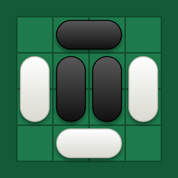

2マスの駒で遊ぶリバーシ
駒はすべて隣り合う 2 マスを使います。相手を挟めば裏返る、おなじみのルール。ただし、駒の片側だけが挟まれても、駒全体（2 マス）が裏返ります。
- 8×8（標準・短時間で決着）と 10×10（拡張・じっくり戦略）の 2 つの盤面
- CPU 対戦（かんたん・ふつう・つよい）と、1 台で遊ぶ 2 人対戦
- 置けなくなった 1 マスは最後まで空きのまま。マスの多い方が勝ち
- 実際の盤で操作して覚える「遊び方」つき
- 広告なし・課金なし・ログイン不要。データは端末内だけに保存します

2マスの駒で遊ぶリバーシ
Reversi with two-cell pieces
駒はすべて隣り合う 2 マスを使います。相手を挟めば裏返る、おなじみのルール。ただし、駒の片側だけが挟まれても、駒全体（2 マス）が裏返ります。
Every piece covers two cells side by side. Sandwich your opponent to flip them, just like reversi — but if only one half of a piece is sandwiched, the whole piece flips.